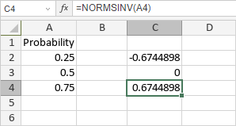

NORMSINV funkcija
NORMSINV funkcija je jedna od statističkih funkcija. Koristi se za vraćanje inverzne vrednosti standardne normalne kumulativne distribucije.
Sintaksa
NORMSINV(probability)
NORMSINV funkcija ima sledeći argument:
| Argument | Opis |
|---|---|
| probability | Verovatnoća koja odgovara normalnoj distribuciji. Numerička vrednost veća od 0, a manja od 1. |
Napomene
Kako primeniti NORMSINV funkciju.
Primeri
Na slici ispod prikazan je rezultat koji vraća NORMSINV funkcija.
